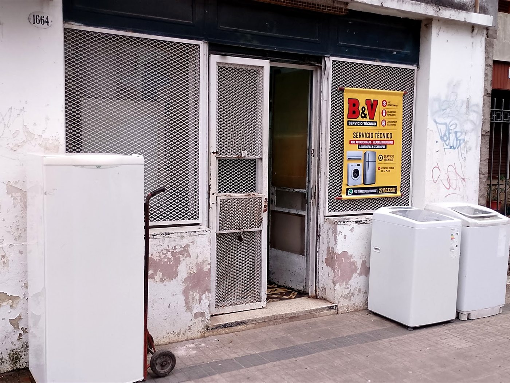
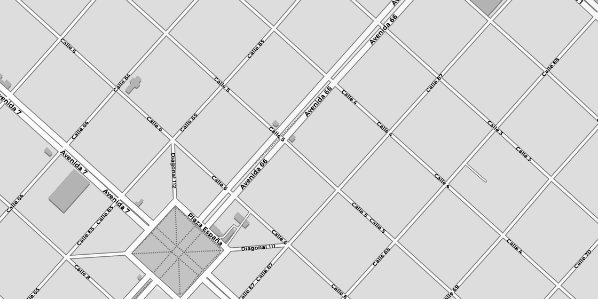

La Plata · A domicilio o en el local · +20 años de oficio
¿Qué le pasa
a tu equipo?
Tocá el síntoma. Te abre el WhatsApp con el mensaje ya escrito, así no tenés que explicar nada desde cero.
Qué reparamos
Cuatro equipos,
todas las marcas
Taller independiente. Reparamos equipos de todas las marcas, pero no somos service oficial de ninguna.
Lavarropas
No centrifuga · Pierde agua · No calienta · No arranca · Hace ruido al centrifugar · Traba la puerta · Corta el programa
ConsultarSecarropas
No seca · Gira pero sale frío · No gira el tambor · Hace ruido · Corta a los pocos minutos · Se recalienta
ConsultarHeladeras
No enfría · Enfría el freezer pero no abajo · Hace mucho hielo · Tira agua por abajo · No para nunca · Hace ruido
ConsultarAires acondicionados
No enfría · Pierde agua adentro · No arranca · Huele mal · Carga de gas
ConsultarCómo funciona
Tres pasos
y listo
-
Escribís por WhatsApp
Contás qué equipo es y qué le pasa. Si podés, mandá una foto de la etiqueta con la marca y el modelo: acelera todo.
-
Elegís cómo seguir
Vamos a tu casa y coordinamos día y horario según tu zona. O si te resulta más cómodo, lo traés al local de Calle 5, de lunes a viernes de 8 a 16.
-
Te decimos qué tiene
Lo revisamos y te contamos qué le pasa. Si hace falta un repuesto, te pasamos el presupuesto antes de cambiar nada: qué repuesto es y cuánto sale.
Dónde estamos
Somos de acá,
de La Plata
Más de veinte años arreglando los equipos del barrio. Trabajamos a domicilio en toda la ciudad y alrededores, y también recibimos equipos en el local.
- Horarios
- Lunes a viernes de 8 a 16 h
- Cobertura
- La Plata y alrededores


Plano © OpenStreetMap, estilo © CARTO
Quién te atiende
Quiénes somos
Soy Juan Darío Arocena y hace más de veinte años que reparo electrodomésticos en La Plata. B&V Servicio Técnico es el nombre comercial con el que trabajo como técnico independiente.
Atiendo a domicilio en toda la ciudad y alrededores, y también recibo equipos en mi local de Calle 5 entre 66 y 67, de lunes a viernes de 8 a 16.
Trabajo con lavarropas, secarropas, heladeras y aires acondicionados de todas las marcas. Antes de cambiar cualquier repuesto te digo qué es y cuánto sale.
B&V Servicio Técnico es un taller independiente. No somos service oficial ni representante autorizado de ningún fabricante. Las marcas que se mencionan en este sitio se citan sólo como referencia de los equipos que reparamos y pertenecen a sus respectivos titulares.
No lo tires.
Capaz tiene arreglo.
Contanos qué le pasa y te decimos si conviene repararlo. Sin vueltas.
Escribinos al 0221 563-3301